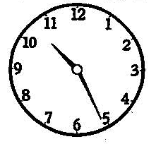
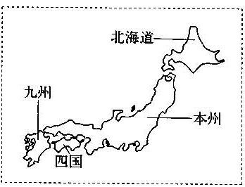
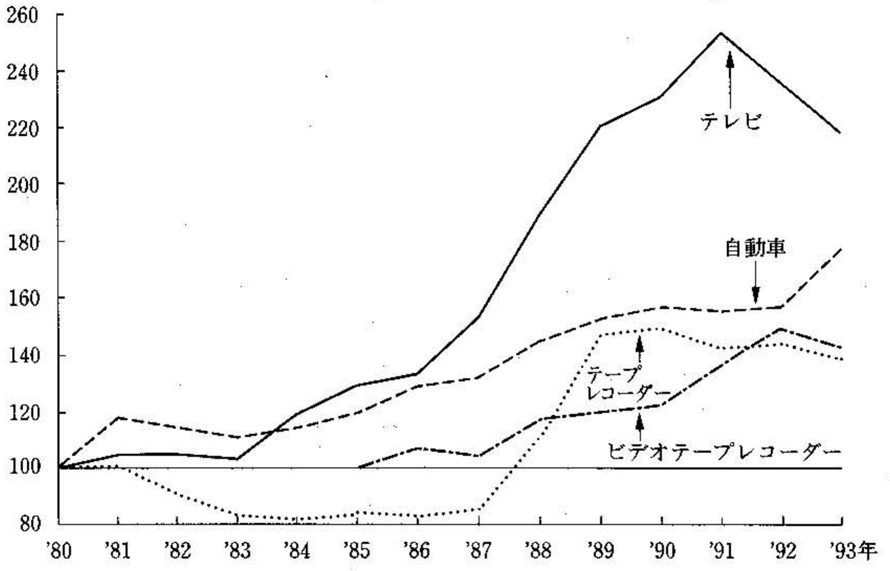

（1）
受ける
問1 すべての国民は教育を受ける権利があると憲法に書かれている。
問2 彼の専攻分野は社会人類学で、社会に見られるさまざまな日常の現象についての論文を書いている。
問3 かがみに映った顔は左右が逆になる。
問4 山に囲まれたこの小さな村では、農業を手伝ってくれる若者を募集している。
問5 男女平等をテーマにした会議が開かれ、各国の代表が出席して、家庭や職場で起こっている問題を話し合った。
問1 ガラスのはへんでゆびにけがをして、ほうたいをまいてもらった。
問2 八十さいのそふは、毎朝近くのこうえんを散歩する。
問3 首都の人口はきゅうそくにぞうかし、20せいきの終わりまでに一千万人にたっするだろうと言われている。
問4 こうつう規則にいはんすると、運転めんきょをとりあげられることもある。
問5 夏は水のじょうはつがはやいので、ぬれたタオルもすぐかわいてしまう。
問6 森林のげんしょうによって、地球全体のきこうがしだいにへんかしてきた。
ひとりの子どもの話です。
仕事で疲れ切って、家ではごろごろ（注1）してテレビばかりを見ている父親はあまり存在感がない、まるで透明人間みたいだ、という子の文章がありました。
これではいけない。子どもたちに、父親が働いている姿を見せたらどうか。そういう意見もあって、ある母親は子どもを連れて、父親が働く工場へ行くのです。
その子が参観（注2）の記を書きました。
「友だちのおとうさんが、どこかの課長さんだとか、放送局につとめているとかいうとき、私はいつもだまっていました。『わたしのおとうさんは工場のコックさんだ』というのが、なんだかはずかしくてならなかったのです。でも、わたしは、きょうからそれが（ ③ ）いえるような気がします」
その子は初めて、白いコック帽をかぶった父親の働いている姿を見ます。野菜サラダを作っている。びっくりするほど早い手つき（注3）でてきぱきと（注4）仕事をすすめている。
「今まで、あんなおとうさんを見たことがありませんでした。何かよその人のような気がするくらいでした。でも、やっぱりわたしのおとうさんでした。おとうさんは、はずかしそうな顔などちっともしていません。わたしだけが、なんではずかしがっていたのかと思うと、なんかわるいことをしていたような気がしました」
お昼のサイレンが鳴る。大勢の工員さんたちが集まる。「大勢の工員さんたちが、待ちかまえていた（注5）ように食べているのを観ると、わたしまでなんだかうれしくなりました。みんな残さず食べてもらえるかと、じっとそれを見ていました」
現場を踏んだことで、子どもの父親観（注6）が変わるのです。みんなが残さずに食べてくれるだろうか。そう思ってじっと見ている子の心臓の音が伝わってきます。「お父さんの働く場所」という現場で、子どもは家にいる父親とは別の父に出あうことができたのです。
（辰濃和男『文章の書き方』岩波新書による）
（注1）ごろごろする：特に仕事もしないで過ごす
（注2）参観の記：見学したときのことを書いた文章
（注3）手つき：手の動かし方
（注4）てきぱきと：適切にどんどん仕事を進めていく様子
（注5）待ちかまえる：すぐに対応できる姿勢で待つ
（注6）父親観：父親についての見方
| デジタル時計の文字盤 | アナログ時計の文字盤 |
|---|---|
 |
見慣れたはずの時計でも、よく見ると不思議なことがたくさんある。たとえば、時計の文字盤は12時から始まっているのはなぜか。結論から先にいうと、時計が考案された（紀元前（注1）3000～4000年）のが、人類がゼロを発見する（8～9世紀）よりも先だったからといわれている。
しかし、数字は連続性からいえば、午前12時59分の次に1時が来るのはおかしいので、文字盤の頂点は「ゼロ」にすべきだとする考え方もある。日本では混同（注2）を避けるため、新聞やテレビ、そして日本時計学会のデジタル時計の表示などでは0時表記を優先（注3）させているものの、時計の文字盤そのものを［ ② ］。（中略）
また、文字盤のローマ数字はIVでなく、が使われる。これはフランスのシャルル5世が建設中の時計を見て、「文字盤のIVはVからIを引くことになり縁起が悪い（注4）のでにせよ」と指示を出したのが後世に引き継がれた（注5）、とのエピソード（注6）がある。＊は正式なローマ数字には見当たらないもので、時計の文字盤だけに用いられる。
右回りにしろ、12時から始まることにしろ、ローマ数字の表記のしかたにしろ、世界中の時計に徹底されているのが興味深い。（中略）
時計のアナログ文字盤を応用すると、方角を指示するときにも便利だ。船に乗っているときに進行方向を12時と考え、「3時方向にクジラを発見！」と声を出せば、それだけで、ほとんどの人がクジラを見つけることができるだろう。
時計はたんに時刻がわかればよい、とする計測機器ではない。見やすさと美しさが兼ね備わっていなければならない。12を0に変えない理由、をIVにしない理由、それらは時計職人たちの怠慢（注7）の結果ではなく、時計としての完成度を維持するために受け継がれている大切な要素なのではないだろうか。
（織田一朗『時計の針はなぜ右回りなのか』草思社による）
（注1）紀元前：B.C.、西暦元年（1年）より前
（注2）混同：区別しなければならないものを、間違えて同じにすること
（注3）優先：ほかよりも先にすること
（注4）縁起が悪い：何か悪いことが起こりそうな気がする
（注5）引き継ぐ：前の人がしたことを受け取って後に伝える
（注6）エピソード：興味深い短い話
（注7）怠慢：なまけること
＊印以下の文は、原著の次版において「は一般的に使用されているローマ数字には見当たらないもので、時計の文字盤に用いられる」と改訂される予定。
次のa・b・c・dのことを、歴史的に古いものから順番に並べた組み合わせはどれか。
a：フランスのシャルル5世が建設中の時計を見たこと
b：人類がゼロを発見したこと
c：時計の文字盤では、ローマ数字のIVではなく、が使われること
d：時計が初めて作られたこと
（1）日本が島国であることは誰でも知っているけれども、たいていの人は日常生活の中でそのことを忘れている。日本全体の面積の95パーセントは本州・北海道・九州・四国（注）の四つの島が占めている。この四島では［ ］、周囲を海に囲まれているという実感は薄い。本当に島という感じを味わうにはもっと小さな、いわゆる離島に行ってみなければならない。
（池澤夏樹『むくどり通信』朝日新聞社による）
（注）

（2）液体としてのH2Oを表す語として、日本語には「湯」と「水」がある。この場合、湯というもの、水というものの区別がまずはっきりとあって、それに対してそれぞれ「湯」および「水」（注1）という名前がつけられているというふうに普通考えられる。これは、ごく当たり前の見方であり、たしかにそういう面もある。しかし、よく考えてみると、これによってすべて説明がつくわけではないことがわかってくる。この見方に従った場合、あらかじめ（注2）存在するところの湯とは一体何か、また、水とは何かを考えてみると、湯は温かいもの、そして水は冷たいものという程度の漠然（注3）としたことはいえても、では、何度以上が湯で、何度以下が水かということになると、はっきりと決めることはできない。つまり、自然界には、水と湯の明確な区分というものは本来存在しないのである。
（牧野信也『アラブ的思考様式』講談社学術文庫による）
（注1）「湯」および「水」：「湯」と「水」
（注2）あらかじめ：もともと、はじめから
（注3）漠然とした：はっきりしない
（3）「何杯食べても四百円か」
男は、ラーメン屋の立て看板に目をやると、すぐに店の中に入った。
男は若く、体格（注1）が良く、かなりの大食漢（注2）。
ラーメンを一杯、軽く食べると二杯目に入った。
「お客さん、どんどん食べて下さい」
やがて、三杯目。これもクリア（注3）。
「まだまだ遠慮しないで、もっと食べてもいいんですよ」
「それにしても、こんなことでよく商売が成り立つ（注4）な」
男は四杯目に入った。だが、さすがに全部食べることはできなかった。
「もう腹いっぱい。四杯でやめておくよ。お勘定！」
「千六百円です」
「えっ、四百円じゃないんですか」
「お客さん、外の看板を見てくださいよ」
「おかしいな」と思い、看板を見ると（何杯食べても一杯四百円）のまちがいだった。
（伊藤聡「何杯食べても」『小説現代』講談社1996年3月号による）
（注1）体格が良い：体が大きくてしっかりしている
（注2）大食漢：たくさん食べる人
（注3）クリア：ぜんぶ食べてしまうこと、目標をこえること
（注4）成り立つ：できる
（4）次の文章は、下のグラフを説明したものです。
日本人の日常生活で一般的に使用される電気製品や自動車の購入（注1）価格はどのように変化しているだろうか。グラフを見てその変化と理由を検討してみよう。このグラフは1980年の購入価格を100としたときの毎年の購入価格を表したものである。（ a ）は、1987年を境に購入価格が急速に上昇（注2）したが、1989年からはあまり変化していない。その理由としては1988年頃、CDプレーヤーがついて価格が上がったためと考えられる。（ b ）も同様に1987年頃から大幅に価格が上昇しているが、1991年を頂点にそれ以後下降に転（注3）じている。これは大型化による価格の上昇とその後の消費者の大型離れが影響していると考えられる。1985年から統計をとり始めた（ c ）を見ると、購入価格は少しずつ上がってきたが、1992年以後、やや下降し始めている。（ d ）も、1983年から次第に上昇し、さらに1993年には大きく購入価格が伸びている。その理由は、輸入が増加したからである。
（注1）購入：買うこと
（注2）上昇：上がること
（注3）転じる：変わる

（グラフ：家計消費研究会編『家計簿からみたニッポン1994』による）
（5）家を建てた人が、楽にその家を建てたか、それとも、かなり［ ］建てたかということは照明（注1）器具を見ればわかるという。そういう目で見たことはないが、そういうもんだそうだ。
建築でいえば、照明の取りつけが最後になる。従って、だんだんに資金につまって（注2）くると、最後のところでお粗末になる。
（山口瞳『男性自身 困った人たち』新潮文庫による）
（注1）照明：明かり
（注2）つまる：残りがなくなって困る
（6）下のA～Dは、それぞれア、イ、ウ、エのどこかに入る文です。
私が図書館で働いていたころ、進くんという六つの男の子が、ときどき図書館へやってきました。本には全然興味のないらしい進くんが、そもそも（注1）どうして図書館へ来たのか、そこのところはわかりませんが、とにかく、
あるとき、それをしかるかわりに、絵本を読んでやったところが、それからは、
でも、見ていますと、
それでいて、読み進んで残りのページが少なくなると、「これがすんだら、あれね」と、次の本をさすのです。結局、
進くんにとっては、読んでもらうということが、かまって（注2）もらえるという意味でうれしかったのでしょう。
やってくると、一応パラパラと雑誌を見、そのあとは、奇声（注3）を発したり、机の間を走ったり、騒ぎはじめます。
肝心（注4）の読んでもらっている本には、それほど興味をもっていないことがわかるのです。
来るたんびに（注5）、読め読めとせがむ（注6）ようになりました。
（松岡享子『えほんのせかい こどものせかい』日本エディタースクール出版部による）
（注1）そもそも：もともと、第一に
（注2）かまう：世話をする、相手になる
（注3）奇声を発する：高くて変な声を出す
（注4）肝心の：いちばん大事なはずの
（注5）たんびに：たびに
（注6）せがむ：しつこく頼む